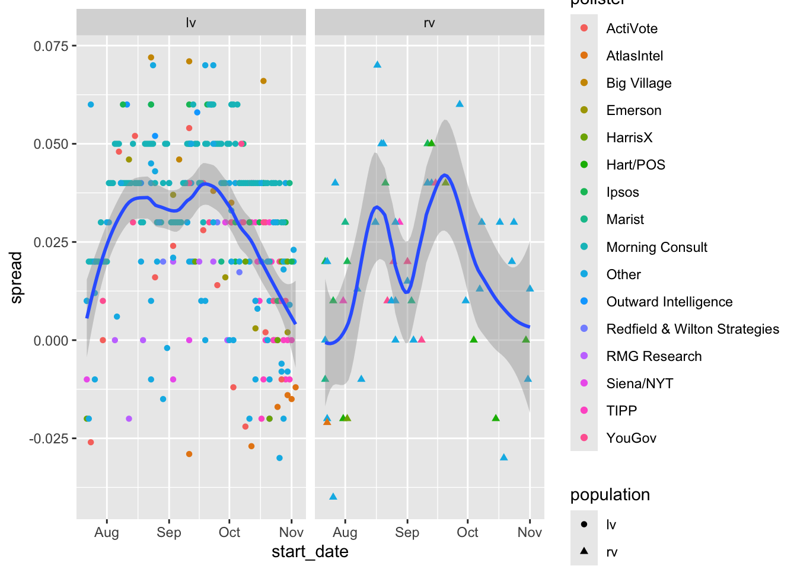
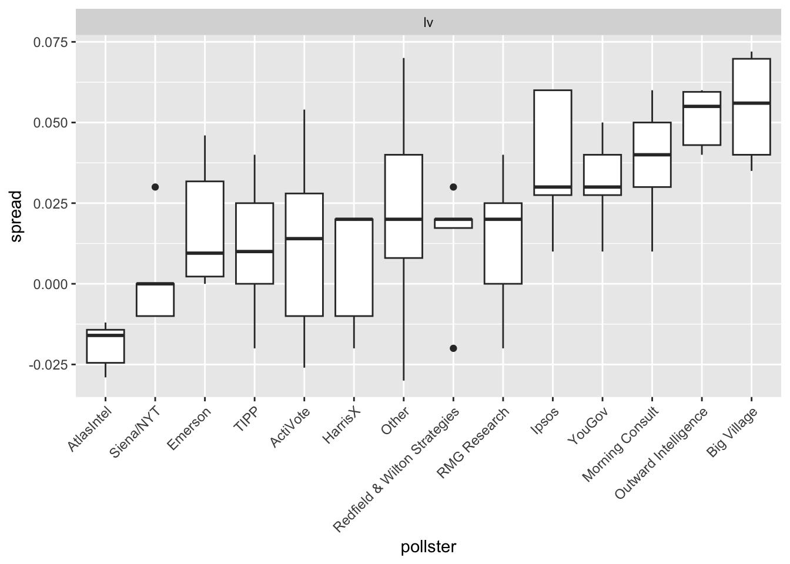
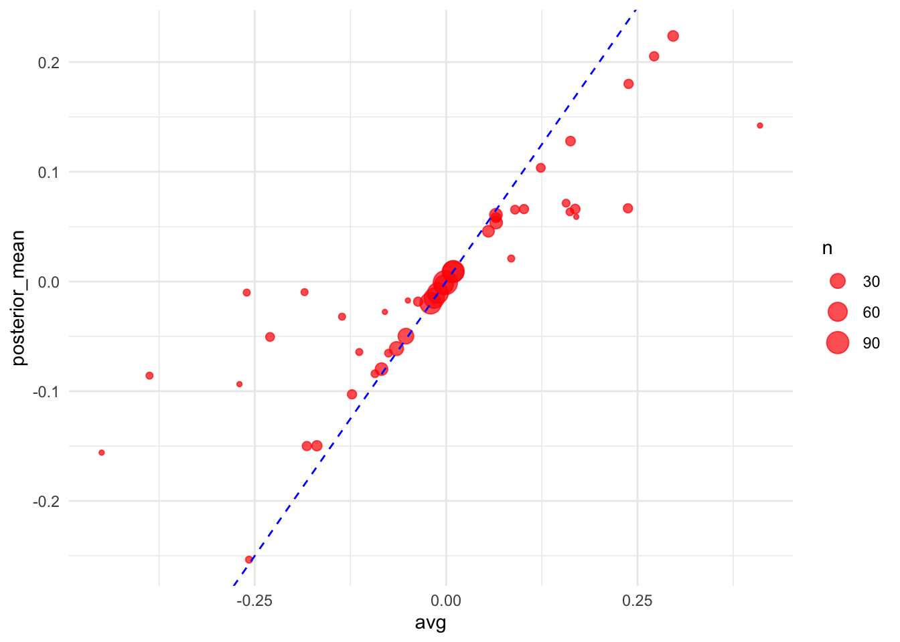

url <- "https://raw.githubusercontent.com/dmcable/BIOSTAT620/refs/heads/main/data/president_polls.csv"Problem set 6
For this problem set we want you to predict the 2024 election. You you will report a prediction of the number of electoral votes for Harris and an interval. You will do the same for the popular vote. You will compare your accuracy to the true results.
- Read in the data provided here:
Examine the data frame paying particular attention to the poll_id question_id, population, and candidate. Note that some polls have more than one question based on different population types.
library(tidyverse)── Attaching core tidyverse packages ──────────────────────── tidyverse 2.0.0 ──
✔ dplyr 1.1.4 ✔ readr 2.1.5
✔ forcats 1.0.0 ✔ stringr 1.5.1
✔ ggplot2 3.5.1 ✔ tibble 3.2.1
✔ lubridate 1.9.3 ✔ tidyr 1.3.1
✔ purrr 1.0.2
── Conflicts ────────────────────────────────────────── tidyverse_conflicts() ──
✖ dplyr::filter() masks stats::filter()
✖ dplyr::lag() masks stats::lag()
ℹ Use the conflicted package (<http://conflicted.r-lib.org/>) to force all conflicts to become errorslibrary(rvest)
Attaching package: 'rvest'
The following object is masked from 'package:readr':
guess_encodingraw_dat <- read.csv(url)- Polls are based on either likely voters (lv), registered voters (rv), all voters (a), or voters (v). Polls based on ‘voters’ are exit polls. We want to remove these because exit polls are too old or might be biased due to differences in the likelihood of early voter by party. We prefer likely voter (lv) polls because they are more predictive. Registered voter polls are more predictive than all voter (a) polls. Remove the exit poll (v) polls and then redefine
populationto be a factor ordered from best to worse predictive power: (lv, rv, a). You should also remove hypothetical polls and make the date columns into date objects. Name the resulting data framedat.
dat <- raw_dat |>
filter(population != "v")|>
mutate(population = factor(population, levels = c("lv","rv","a"), ordered = TRUE))|>
mutate(start_date = mdy(start_date),
end_date = mdy(end_date))|>
filter(hypothetical == "false")|>
drop_na(population)- Some polls asked more than one questions. So if you filter to one poll ID in our dataset, you might see more than one question ID associated with the same poll. The most common reason for this is that they asked a head-to-head question (Harris versus Trump) and, in the same poll, a question about all candidates. We want to prioritize the head-to-head questions.
Add a column that tells us, for each question, how many candidates where mentioned in that question.
Add a new column n to dat that provides the number of candidates mentioned for each question. For example the relevant column of your final table will looks something like this:
poll_id |
question_id |
candidate |
n |
|---|---|---|---|
| 1 | 1 | Harris | 2 |
| 1 | 1 | Trump | 2 |
| 1 | 2 | Harris | 3 |
| 1 | 2 | Trump | 3 |
| 1 | 2 | Stein | 3 |
dat <- dat |>
group_by(question_id)|>
mutate(n = n())|>
ungroup()|>
rename(candidate = answer)- We are going to focus on the Harris versus Trump comparison. Redefine
datto only include the rows providing information for Harris and Trump. Then pivot the dataset so that the percentages for Harris and Trump are in their own columns. Note that for pivot to work you will have to remove some columns. To avoid this keep only the columns you are pivoting and along withpoll_id,question_id,state,pollster,start_date,end_date,numeric_grade,sample_size. Once you accomplish the pivot, add a column calledspreadwith the difference between Harris and Trump.
Note that the values stored in spread are estimates of the popular vote difference that we will use to predict:
spread = % of the popular vote for Harris - % of the popular vote for Trump
However, for the calculations in the rest of problem set to be consistent with the sampling model we have been discussing in class, save spread as a proportion, not a percentage. But remember to turn it back to a percentage when reporting your answer.
dat <- dat |>
filter(candidate %in% c("Harris", "Trump"))|>
select(poll_id, question_id, state, pollster, start_date, end_date, numeric_grade,
sample_size, n, population, candidate, pct) |>
pivot_wider(
names_from = candidate,
values_from = pct)|>
mutate(spread = (Harris - Trump) / 100)- Note that some polls have multiple questions. We want to keep only one question per poll. We will keep likely voter (lv) polls when available, and prefer register voter (rv) over all voter polls (a). If more than one question was asked in one poll, take the most targeted question (smallest
n). Save the resulting tabledat. Note that now each after you do this each row will represents exactly one poll/question, so can removen,poll_idandquestion_id.
dat <- dat |>
arrange(population,n)|>
group_by(poll_id)|>
slice(1)|>
ungroup()|>
select(-n,-poll_id,-question_id)- Separate
datinto two data frames: one with popular vote polls and one with state level polls. Call thempopular_voteandpollsrespectively.
popular_vote <- dat |>
filter(state == "")
polls <- dat |>
filter(state != "")- For the popular vote, plot the spread reported by each poll against start date for polls starting after July 21, 2024. Rename all the pollsters with less than 5 polls during this period as
Other. Use color to denote pollster. Make separate plots for likely voters and registered voters. Do not use all voter polls (a). Usegeom_smoothwith methodloessto show a curve going through the points. You can change how adaptive the curve is to that through thespanargument.
library(lubridate)
popular_vote|>
filter(start_date > make_date(2024, 7, 21) & population != "a") |> #end_date
group_by(pollster)|>
mutate(n = n())|>
ungroup()|>
mutate(pollster = ifelse(n < 5, "Other", pollster))|>
ggplot(aes(start_date, spread)) +
geom_point(aes(color = pollster, pch = population)) +
geom_smooth(method = "loess", span = 0.5) +
facet_wrap(~population)Warning: Using shapes for an ordinal variable is not advised`geom_smooth()` using formula = 'y ~ x'
- To show the pollster effect, make boxplots for the the spread for each popular vote poll. Include only likely voter polls starting after July 21, 2024. Rename all the pollsters with less than 5 polls during that time period as
Other.
popular_vote |>
filter(start_date > make_date(2024, 7, 21) & population == "lv") |>
group_by(pollster)|>
mutate(n = n())|>
ungroup()|>
mutate(pollster = ifelse(n < 5, "Other", pollster))|>
mutate(pollster = reorder(pollster, spread, median))|>
ggplot(aes(pollster, spread)) +
geom_boxplot() +
theme(axis.text.x = element_text(angle = 45, hjust = 1)) +
facet_wrap(~population)
- Compute a prediction and an interval and report the result. Include the code you used to create your confidence interval for the popular vote here:
tmp = popular_vote|>
summarize(avg = mean(spread, na.rm = TRUE), sd = sd(spread, na.rm = TRUE), n = n())
sigma = .02
tmp$avg + c(-1,1)*1.96*sqrt(sigma^2 + tmp$sd^2/tmp$n)[1] -0.03448148 0.04430503Harris received a popular vote spread of -1.5% vs Trump in the 2024 election. How did your model do? Provide some potential explanations for the performance.
Voter sentiment may shift near an election, state-level voting trends may not be accurately represented in national polls, and sample techniques and response rates can all lead to polling inaccuracies.We now move on to predicting the electoral votes.
- To obtain the number of electoral votes for each state we will visit this website:
url <- "https://state.1keydata.com/state-electoral-votes.php"We can use the rvest package to download and extract the relevant table:
library(rvest)
h <- read_html(url) |>
html_table()
ev <- h[[4]]Wrangle the data in ev to only have two columns state and electoral_votes. Make sure the electoral vote column is numeric. Add the electoral votes for Maine CD-1 (1), Maine CD-2 (1), Nebraska CD-2 (1), and District of Columbia (3) by hand.
ev <- ev |>
rename(state = X2, electoral_votes = X3) |>
slice(-1) |>
select(-X1)|>
mutate(electoral_votes = as.numeric(electoral_votes))
additional_votes <- tibble(
state = c("Maine CD-1", "Maine CD-2", "Nebraska CD-2", "District of Columbia"),
electoral_votes = c(1, 1, 1, 3)
)
ev <- ev |> bind_rows(additional_votes)
ev# A tibble: 54 × 2
state electoral_votes
<chr> <dbl>
1 California 54
2 Texas 40
3 Florida 30
4 New York 28
5 Illinois 19
6 Pennsylvania 19
7 Ohio 17
8 Georgia 16
9 North Carolina 16
10 Michigan 15
# ℹ 44 more rows- The presidential race in some states is a forgone conclusion. Because their is practically no uncertainty in who will win, polls are not taken. We will therefore assume that the party that won in 2020 will win again in 2024 if no polls are being collected for a state.
Download the following sheet:
library(gsheet)Warning: package 'gsheet' was built under R version 4.3.3sheet_url <- "https://docs.google.com/spreadsheets/d/1D-edaVHTnZNhVU840EPUhz3Cgd7m39Urx7HM8Pq6Pus/edit?gid=29622862"
raw_res_2020 <- gsheet2tbl(sheet_url) Tidy the raw_res_2020 dataset so that you have two columns state and party, with D and R in the party column to indicate who won in 2020. Add Maine CD-1 (D), Maine CD-2 (R), Nebraska CD-2 (D), and District of Columbia (D) by hand. Save the result to res_2020. Hint use the janitor row_to_names function.
library(janitor)Warning: package 'janitor' was built under R version 4.3.3
Attaching package: 'janitor'The following objects are masked from 'package:stats':
chisq.test, fisher.testres_2020 <- raw_res_2020[,c(1,4)] |>
janitor::row_to_names(1)|>
filter(State %in% ev$state)|>
rename(state = State, party = 'P.S.')|>
mutate(party = str_remove(party, "\\+"))|>
bind_rows(data.frame(state = c("Maine CD-1", "Maine CD-2", "Nebraska CD-2", "District of Columbia"), party = c("D", "R", "D", "D")))- Decide on a period that you will use to compute your prediction. We will use
spreadas the outcome. Make sure the the outcomes is saved as a proportion not percentage. Create aresultsdata frame with columnsstate,avg,sd,nandelectoral_votes, with one row per state.
Some ideas and recommendations:
- If a state has enough polls, consider a short period, such as a week. For states with few polls you might need to increase the interval to increase the number of polls.
- Decide which polls to prioritize based on the
populationandnumeric_gradecolumns. - You might want to weigh them differently, in which you might also consider using
sample_size. - If you use fewer than 5 polls to calculate an average, your estimate of the standard deviation (SD) may be unreliable. With only one poll, you wont be able to estimate the SD at all. In these cases, consider using the SD from similar states to avoid unusual or inaccurate estimates.
results <- polls |>
filter(!is.na(numeric_grade)) |>
mutate(week = floor(as.numeric(difftime(max(end_date), end_date, units = "week"))))|>
group_by(state) |>
summarize(
avg = mean(spread, na.rm = TRUE),
sd = sd(spread, na.rm = TRUE),
n = n()
) |>
ungroup()
results <- results |>
left_join(ev, by = "state")
results# A tibble: 45 × 5
state avg sd n electoral_votes
<chr> <dbl> <dbl> <int> <dbl>
1 Alaska -0.093 0.0113 3 3
2 Arizona -0.0203 0.0260 82 11
3 California 0.238 0.0784 6 54
4 Colorado 0.124 0.0196 5 10
5 Delaware 0.17 NA 1 3
6 Florida -0.0526 0.0276 35 30
7 Georgia -0.0155 0.0248 72 16
8 Indiana -0.136 0.0509 2 11
9 Iowa -0.0753 0.0136 3 6
10 Kansas -0.05 NA 1 6
# ℹ 35 more rows- Note you will not have polls for all states. Assume that lack of polls implies the state is not in play. Use the
res_2020data frame to compute the electoral votes Harris is practically guaranteed to have.
no_poll_states <- setdiff(ev$state, results$state)
no_poll_ev <- ev |>
filter(state %in% no_poll_states)
harris_state <- no_poll_ev |>
left_join(res_2020, by = "state") |>
filter(party == "D")
harris_start <- sum(harris_state$electoral_votes)
print(harris_start)[1] 33- Use a Bayesian approach to compute posterior means and standard deviations for each state in
results. Plot the posterior mean versus the observed average with the size of the point proportional to the number of polls.
# mu_prior <- 0
# sigma_prior <- 0.05^2 ########
results <- results |>
mutate(sd = ifelse(is.na(sd), median(results$sd, na.rm = TRUE), sd))
# results <- results |>
# mutate(
# sigma = ifelse(n > 1, (sd^2 / n), 0.01^2),
# sigma_post = 1 / (1 / sigma_prior + 1 / sigma),
# posterior_mean = ifelse(is.na(sigma), mu_prior,
# (mu_prior / sigma_prior + avg / sigma) / (1 / sigma_prior + 1 / sigma)),
# posterior_se = sqrt(sigma_post)
# )
#
# ggplot(results, aes(x = avg, y = posterior_mean, size = n)) +
# geom_point(alpha = 0.7, color = "red") +
# geom_abline(slope = 1, intercept = 0, linetype = "dashed", color = "blue") +
# theme_minimal()
mu <- 0
tau <- 0.02
results <- results |>
mutate(
sigma = sd / sqrt(n),
B = sigma^2 / (sigma^2 + tau^2),
posterior_mean = B * mu + (1 - B) * avg,
posterior_se = sqrt(1 / (1 / sigma^2 + 1 / tau^2))
)
ggplot(results, aes(x = avg, y = posterior_mean, size = n)) +
geom_point(alpha = 0.7, color = "red") +
geom_abline(slope = 1, intercept = 0, linetype = "dashed", color = "blue") +
theme_minimal()
- Compute a prediction and an interval for Harris’ electoral votes and show the result. Include the code you used to create your estimate and interval below.
# set.seed(123) # Set seed for reproducibility
# n_sim <- 10000 # Number of simulations
#
# # Simulate electoral vote outcomes
# simulated_ev <- replicate(n_sim, {
# simulated_wins <- rnorm(nrow(results), mean = results$posterior_mean, sd = results$posterior_se) > 0
# sum(results$electoral_votes * simulated_wins) # Sum electoral votes where Harris wins
# })
#
# # Compute expected electoral votes
# harris_ev <- mean(simulated_ev)
#
# # Compute 95% Prediction Interval
# ev_ci <- quantile(simulated_ev, c(0.025, 0.975))
#
# # Print results
# print(paste("Harris' Expected Electoral Votes:", round(harris_ev)))
# print(paste("95% Prediction Interval:", round(ev_ci[1]), "-", round(ev_ci[2])))
set.seed(123)
B <- 10000
harris_EV <- replicate(B, {
results |>
mutate(
result = rnorm(length(posterior_mean), posterior_mean, posterior_se),
harris = ifelse(result > 0, electoral_votes, 0)
) |>
summarize(harris = sum(harris)) |>
pull(harris)
})
harris_ev <- mean(harris_EV, na.rm = TRUE)
ev_ci <- quantile(harris_EV, c(0.025, 0.975), na.rm = TRUE)
print(paste("Harris' Expected Electoral Votes:", round(harris_ev)))[1] "Harris' Expected Electoral Votes: 231"print(paste("95% Prediction Interval:", ev_ci[1], "-", ev_ci[2]))[1] "95% Prediction Interval: 215 - 252"Harris received 226 electoral votes in the 2024 election. How did your model do? Provide some potential explanations for the performance.
I think my model is doing ok, the true value is fall in the 95% CI, and the mean is pretty close to the true mean. Potential explanations can be a few electoral votes may have been moved by some states being closer than anticipated. Results may have been impacted by higher or lower turnout in important states.Predictions from some state polls might be a little skewed.